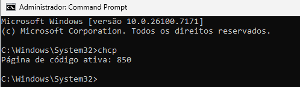

Por que essa pergunta é importante?
Se você usa o Windows, deve estar se perguntando por que essa pergunta é importante. Por gentileza, abra o cmd e execute comigo o comando "chcp", ele retorna o código de página de caracteres que está em uso no momento:
Ele retornará o código de página 850.
Vamos ao Google e pesquisar esta página com os termos "Code page 850" e seremos encaminhados para a Wikipedia:
https://en.wikipedia.org/wiki/Code_page_850
E então descobrimos que estamos usando o ISO8859_1 (também conhecido como "Latin1").
Histórico: ISO8859_1, WIN1252 e UNICODE
Se você chegou a conhecer o MS-DOS deve se lembrar do comando chcp que usávamos no autoexec.bat para tornar possível ver as acentuações na tela. Então desde os primórdios do MS-DOS usamos ISO8859_1 para tornar possível ver nossas acentuações no terminal. O ISO8859_1 leva o prefixo "iso" porque foi aprovado pelo comitê internacional de mesmo nome: International Organization for Standardization (Organização Internacional de Normalização) o equivalente a nossa ABNT só que internacional.
Mas uma coisa é o terminal, algo considerado legado por alguns para rodar aplicações. Quando o Windows surgiu com uma interface gráfica, a Microsoft resolveu criar um novo código de página chamado WIN1252; por isso tem o "Win" no nome, foi feito exclusivamente para o ambiente Windows e teve a aprovação da ANSI, a ABNT americana.
Por que criar seu próprio padrão ao invés de continuar usando o ISO8859_1? Essa é uma pergunta difícil de responder. O ISO8859_1 foi criado inicialmente pela Apple e depois aprovado pela ISO, e naquela época a Microsoft gostava de ditar os padrões da indústria; talvez por isso tenham criado o WIN1252. Ele deveria ser desnecessário, já que teve como base o próprio ISO8859_1 e ambos, com poucas exceções, são intercambiáveis entre si. Pessoalmente, só conheço duas diferenças entre ambos: o WIN1252 possui um travessão longo que é diferente do traço normal e um jogo de aspas com serifa (curva).
O problema da fragmentação no Windows
Ter um padrão de geração de caracteres diferentes só criou problemas para a Microsoft: seu terminal (cmd) usa ISO8859_1, a interface gráfica é WIN1252, o sistema de arquivos é UNICODE. Há pouco tempo, se você usasse um bloco de notas para editar um arquivo PHP ou HTML, tinha boas chances de ter o seu trabalho perdido. Sistemas como o Linux são tudo UNICODE e normalmente não é preciso lidar com conversões entre código de páginas diferentes.
Um outro problema com o ambiente Windows é que ele não é mais tão universal como antes; hoje as aplicações estão em nuvem e a maioria dos serviços de banco de dados são hospedados em computadores que não rodam Windows. Se você hospedar dados num servidor Windows armazenando dados no formato WIN1252, provavelmente teria de pensar o que aconteceria se resolvesse hospedar um banco de dados num sistema operacional Linux que segue apenas padrões internacionais ISO, onde o WIN1252 não existe. Você talvez tenha de lidar com problemas de transliteração de caracteres.
Recomendação: ISO8859_1 para portabilidade
Então, o desejável, se queremos uma aplicação ou banco de dados que seja portável entre sistemas operacionais, é desistir do WIN1252 e, em seu lugar, optar pelo ISO8859_1. Agora, daqui em diante vou falar apenas do ISO8859_1 e o padrão UNICODE. Mas ao me referir ao ISO8859_1, lembre-se que também é aplicável ao WIN1252.
UNICODE: a solução moderna
O UNICODE veio para resolver alguns problemas. Há uma ótima palestra da Firebird Conference 2011 em Luxembourg onde o palestrante falou muito sobre charsets, na sua palestra intitulada "Character Sets and Unicode in Firebird" e citou as vantagens:
Referência: https://www.firebirdsql.org/file/community/ppts/fbcon11/FbCon2011-Charsets-Heymann.pdf
- Um único conjunto de caracteres para todos os idiomas / scripts
- Sem sobreposições de código, não é necessário um código arbitrário para corrigir incongruências
- Independente de hardware e sistema operacional
Testando no terminal do Windows
Vamos comprovar que estamos usando o ISO8859_1; vamos agora mudar para WIN1252:
chcp 1252
echo linha #1: teste com com página iso8859_1>teste.txt
echo linha #2: atenção, minha acentuação é inoqüa>>teste.txt
hexeditor teste.txtParece tudo certo, né? Mas vamos mudar agora o código da página para UNICODE:
chcp 65001
echo linha #3: teste com com página unicode>>teste.txt
echo linha #4: atenção, minha acentuação é inoqüa>>teste.txt
hexeditor teste.txtAgora temos duas linhas iniciais exibidas corretamente, mas as duas últimas erroneamente. Por quê? Porque ao iniciar o arquivo pela primeira vez, não há indicativos de codepage dentro do arquivo e então o Windows assume que é ANSI.
Vamos criar as mesmas 4 linhas no Notepad++; note que o mesmo já é criado em UNICODE, mas se olharmos no bloco de notas, notaremos que nenhuma das linhas parece correta porque nem ISO8859_1 nem UNICODE são compatíveis com o WIN1252 (ANSI).
Se usarmos o Notepad++ e convertermos o arquivo para UNICODE (Formatar → Codificação UTF-8 ou Europa Ocidental), as duas primeiras ou as duas últimas linhas estão corretas, mas nunca as 4 linhas.
Por que não usar UNICODE sempre?
Usamos o tempo todo; a Microsoft já se rendeu ao UNICODE no desenvolvimento, embora o Windows ainda tenha uma salada de código de páginas: por exemplo, o sistema de arquivos é UNICODE, o ambiente gráfico ainda é WIN1252 e o cmd (terminal) usa ISO8859_1. Por isso, há muitas inconsistências quando programamos em Windows onde a linguagem usa o formato UNICODE. Se um programador abrir um script SQL em formatoUNICODE e salvá-lo no disco usando WIN1252, os caracteres serão subvertidos para WIN1252 e os que não existirem serão considerados inconsistentes e geralmente mostrados como ? e o inverso também é verdadeiro.
WIN1252 em um banco de dados UNICODE usando o IBExpert, o script aparentemente inofensivo pode não funcionar corretamente.
Isso é um inferno que apenas existe no Windows, e que quando você tentar portar para Linux tem de resolver problemas que antes não existiam. Por isso, para nossa comodidade, os bancos de dados incluem WIN1252 entre os seus charsets, embora o mesmo não seja o ideal.
Charset e performance em bancos de dados
Ainda sobre banco de dados, nem sempre o UNICODE é desejável, pois um único caractere armazenado nele pode ocupar de 1 a 4 bytes. Por isso, não é largamente utilizado se uma aplicação já "fala" ISO8859_1 ou WIN1252, pois nações que usam ideogramas ou outros símbolos tipográficos também sabem "falar" ISO8859_1 ou WIN1252, embora o inverso não seja verdadeiro. Se você precisar de emojis, símbolo do euro ou ideogramas japoneses na mesma aplicação que usa caracteres ocidentais, só o UNICODE resolveria este problema.
Então, se você mora num país ocidental que usa os caracteres A-Z, pode-se considerar sortudo porque temos opções de escolha, e geralmente optamos pela mais econômica que também é a mais performática: desconsiderar UNICODE e escolher entre WIN1252 ou ISO8859_1.
Um banco de dados inteiramente em UNICODE é menos performático quando comparado ao ISO8859_1, não apenas por ser mais guloso em termos de espaço — lembre-se, um varchar(64), a depender do UNICODE usado, ao invés de 64 caracteres pode conter apenas 16 —, mas também porque o algoritmo de "case insensitive" e "accent insensitive" podem vir a ser mais complexos. O MySQL, por exemplo, é reconhecido por adotar uma gambiarra de UNICODE que às vezes cria problemas.
Exemplo prático: Criando um banco de teste
IBExpert – Criar banco de dados:
C:\TEMP\TEST_ISO8859_1.FDB
CHARSET: ISO8859_1
COLLATE: PT_BR
ALIAS: TEST_ISO8859_1.FDB
PORTA: 3040Criar a tabela:
CREATE TABLE T1(
FRUTA_ISO8859 VARCHAR(10) CHARACTER SET ISO8859_1 COLLATE PT_BR,
FRUTA_WIN1252 VARCHAR(10) CHARACTER SET WIN1252 COLLATE WIN_PTBR,
FRUTA_UNICODE VARCHAR(10) CHARACTER SET UNICODE COLLATE UNICODE_CI_AI
);Popular valores acentuados com o script:
INSERT INTO T1 (FRUTA_ISO8859, FRUTA_WIN1252, FRUTA_UNICODE)
VALUES ('Maracujá', 'Maracujá', 'Maracujá');
INSERT INTO T1 (FRUTA_ISO8859, FRUTA_WIN1252, FRUTA_UNICODE)
VALUES ('Açaí', 'Açaí', 'Açaí');
INSERT INTO T1 (FRUTA_ISO8859, FRUTA_WIN1252, FRUTA_UNICODE)
VALUES ('Gravatá', 'Gravatá', 'Gravatá');
INSERT INTO T1 (FRUTA_ISO8859, FRUTA_WIN1252, FRUTA_UNICODE)
VALUES ('Avelã', 'Avelã', 'Avelã');
INSERT INTO T1 (FRUTA_ISO8859, FRUTA_WIN1252, FRUTA_UNICODE)
VALUES ('Melão', 'Melão', 'Melão');
INSERT INTO T1 (FRUTA_ISO8859, FRUTA_WIN1252, FRUTA_UNICODE)
VALUES ('Maçã', 'Maçã', 'Maçã');
INSERT INTO T1 (FRUTA_ISO8859, FRUTA_WIN1252, FRUTA_UNICODE)
VALUES ('Mamão', 'Mamão', 'Mamão');
INSERT INTO T1 (FRUTA_ISO8859, FRUTA_WIN1252, FRUTA_UNICODE)
VALUES ('Jiló', 'Jiló', 'Jiló');
INSERT INTO T1 (FRUTA_ISO8859, FRUTA_WIN1252, FRUTA_UNICODE)
VALUES ('Babaçu', 'Babaçu', 'Babaçu');
COMMIT WORK;Verificar tamanho em bytes:
Será que todos os caracteres têm o mesmo tamanho em bytes? Execute:
SELECT
a.fruta_iso8859||'('||OCTET_LENGTH(a.fruta_iso8859)||')' AS iso8859,
a.fruta_win1252||'('||OCTET_LENGTH(a.fruta_win1252)||')' AS win1252,
a.fruta_unicode||'('||OCTET_LENGTH(a.fruta_unicode)||')' AS unicode
FROM T1 a;Entre as nossas frutas, o limite de caracteres é 10; o maracujá foi a fruta que mais ocupou espaço em bytes com 9 bytes em UNICODE. O que vai acontecer se aumentarmos para 10 caracteres e acentuarmos ainda mais letras? Vamos conferir:
UPDATE T1 SET
FRUTA_UNICODE='Maráçujãío' -- 10 caracteres, deveria caber, o limite é 10
WHERE FRUTA_UNICODE='Maracujá';Conseguimos, mas note a divergência entre o tamanho de caracteres e o tamanho de byte ocupados:
SELECT
a.fruta_iso8859||OCTET_LENGTH(a.fruta_iso8859),
a.fruta_win1252||OCTET_LENGTH(a.fruta_win1252),
a.fruta_unicode||OCTET_LENGTH(a.fruta_unicode)
FROM T1 a
WHERE FRUTA_UNICODE='Maráçujãío';Maracujá tem 10 caracteres, mas ocupa agora 14 bytes. Então o tamanho de um campo não é o mesmo que dizer que o tamanho ocupado. O que acha que aconteceria se todas as 10 letras tivessem acento? Vamos tentar:
UPDATE T1 SET
FRUTA_UNICODE='áéíóúáéíóú' -- 10 caracteres
WHERE FRUTA_UNICODE='Maráçujãío';Chegamos então à conclusão de que em UNICODE o armazenamento do seu banco será maior contendo acentuações do que seria em ISO8859_1 ou ANSI.
Com o armazenamento tão barato, devo me preocupar?
Se seu objetivo for internacionalizar, não deve se preocupar com o armazenamento, mas deve se preocupar com os limites teóricos de seus metadados, como nome de objetos. Por exemplo, se eu criar uma tabela cuja chave é um varchar(x) qual é o tamanho máximo de uma chave dentro de um índice?
Informação oficial do FirebirdSQL: No FirebirdSQL, este tamanho é ¼ do tamanho da página de dados. Se por exemplo, seu banco tem páginas de 4KB, significa que o tamanho de um índice não vai poder ultrapassar 1KB então um índice simples ou composto que tenha mais de 1024 bytes não será possível.
A partir do Firebird 2.0, o comprimento máximo de uma string indexada é calculado pela fórmula:
max_char_length = FLOOR((page_size / 4 - 9) / N)onde N é o número de bytes por caractere no charset.
Então, quando estiver usando UNICODE, tome cuidado com os limites do FirebirdSQL que forem em bytes, pois o que antes era 1 byte = 1 caractere não é mais aplicável. Os limites que eram estabelecidos em caracteres, estes não mudam: se o limite para tamanho de nome para uma tabela é 63 caracteres, continuará sendo 63 caracteres, não importando se é UNICODE ou não.
Aqui temos uma gritante diferença para ISO8859_1 ou WIN1252, pois nestes cada caractere é 1 byte, enquanto em UNICODE o FirebirdSQL assume que cada caractere consumido é 4 bytes. Então, se você criar um campo varchar(18000) e inserir 18.000 caracteres acentuados, ele irá deixar, mas o espaço ocupado será 18.000 × 2 ou 18.000 × 4 dependendo do acento.
Portanto, quando criar um campo que você sabe que no máximo terá X caracteres, leve em consideração:
- O tamanho declarado não é o mesmo que tamanho ocupado.
- Cuidado com os metadados: se um tipo de limite for informado em bytes, então usando
UNICODEvocê terá 4x menos do que o informado.
Vamos ao COLLATE
Charset é o conjunto de caracteres disponíveis, majoritariamente ISO8859_1, WIN1252 e UNICODE. Cada qual com o seu conjunto limitado de caracteres. Se seu banco de dados precisa de caracteres latinos e ocidentais, ISO8859_1 está bom para você; você não deveria usar o WIN1252 porque ele foi provido apenas para Windows e sua condição pode mudar no futuro.
Mas se precisa de um conjunto grande de caracteres que permita escrever na mesma sentença caracteres ocidentais, emojis e símbolo do euro, então você tem que optar pelo UNICODE.
O collate é a forma como os caracteres serão tratados e/ou ordenados. Será que 'A' vem antes de 'á'? Será que 'Pharmacia' e 'Farmacia' são a mesma coisa? Será que 'José' e 'Jose' também são iguais?
Quem cria os collates define isso. No Brasil não tem essa coisa de 'Ph' de pharmacia dos anos 30, mas em outros países podem haver agrupamento de caracteres (collate) que devam ser tratados conjuntamente e não de forma individual.
Exemplo prático de Collate:
CREATE TABLE T2 (
NOME VARCHAR(30) NOT NULL COLLATE PT_BR
);INSERT INTO T2 (NOME) VALUES ('FARMACIA');
INSERT INTO T2 (NOME) VALUES ('FARMÁCIA');
INSERT INTO T2 (NOME) VALUES ('Jose');
INSERT INTO T2 (NOME) VALUES ('José');
INSERT INTO T2 (NOME) VALUES ('JOSÉ');Note agora a ordenação de dados entre dois collates diferentes usando o mesmo charset:
SELECT * FROM T2 a ORDER BY a.nome COLLATE PT_PT;Agora o outro:
SELECT * FROM T2 a ORDER BY a.nome COLLATE PT_BR;Os collates estão atrelados ao charset porque sem eles, o banco não teria a regionalidade de ordenação, ou quais sinais diacríticos são iguais a suas versões sem esses sinais e assim por diante.
Informação oficial do FirebirdSQL: O FirebirdSQL suporta vários collations para UNICODE:
UCS_BASIC- Ordenação binária (posição na tabela)UNICODE- Ordenação alfabética usando UCA (Unicode Collation Algorithm)UNICODE(binário) - Padrão binário, idêntico ao UCS_BASICUNICODE_CI- Case-insensitive (não diferencia maiúsculas/minúsculas)UNICODE_CI_AI- Case-insensitive e accent-insensitive (não diferencia maiúsculas/minúsculas nem acentos)
Mesmo que um banco de dados tenha uma tabela usando 3 charsets diferentes, contendo os mesmos dados, o collate poderá fazer com que os dados se comportem usando a mesma regra linguística. Por exemplo, para o Brasil, case/accent insensitive significa que o collate não fará distinção entre maiúsculos e minúsculos e que a ordenação seguirá um mesmo padrão.
Testando ordenação por charset:
Vamos testar se a ordenação foi influenciada pelo charset executando esta query:
EXECUTE BLOCK
RETURNS(
iso8859_1 VARCHAR(10),
win1252 VARCHAR(10),
unicode VARCHAR(10))
AS
BEGIN
--iso8859_1
iso8859_1='Sim';
win1252='-';
unicode='-';
SUSPEND;
FOR SELECT
a.fruta_iso8859, a.fruta_win1252, a.fruta_unicode
FROM T1 a
ORDER BY a.fruta_iso8859
INTO iso8859_1, win1252, unicode
DO BEGIN
SUSPEND;
END
-- win1252
iso8859_1='-';
win1252='Sim';
unicode='-';
SUSPEND;
FOR SELECT
a.fruta_iso8859, a.fruta_win1252, a.fruta_unicode
FROM T1 a
ORDER BY a.fruta_win1252
INTO iso8859_1, win1252, unicode
DO BEGIN
SUSPEND;
END
-- unicode
iso8859_1='-';
win1252='-';
unicode='Sim';
SUSPEND;
FOR SELECT
a.fruta_iso8859, a.fruta_win1252, a.fruta_unicode
FROM T1 a
ORDER BY a.fruta_unicode
INTO iso8859_1, win1252, unicode
DO BEGIN
SUSPEND;
END
ENDNotamos na saída do comando EXECUTE BLOCK que a ordenação pelo charset ISO8859_1, WIN1252 ou UNICODE não teve diferença!
Inserindo caracteres não acentuados:
Vamos complicar e inserir caracteres não acentuados, executando essa sequência de ExecSQL:
INSERT INTO T1 (FRUTA_ISO8859, FRUTA_WIN1252, FRUTA_UNICODE)
VALUES ('Maracuja', 'Maracuja', 'Maracuja');
INSERT INTO T1 (FRUTA_ISO8859, FRUTA_WIN1252, FRUTA_UNICODE)
VALUES ('Açai', 'Açai', 'Açai');
INSERT INTO T1 (FRUTA_ISO8859, FRUTA_WIN1252, FRUTA_UNICODE)
VALUES ('Gravata', 'Gravata', 'Gravata');
INSERT INTO T1 (FRUTA_ISO8859, FRUTA_WIN1252, FRUTA_UNICODE)
VALUES ('Avela', 'Avela', 'Avela');
INSERT INTO T1 (FRUTA_ISO8859, FRUTA_WIN1252, FRUTA_UNICODE)
VALUES ('Melao', 'Melao', 'Melao');
INSERT INTO T1 (FRUTA_ISO8859, FRUTA_WIN1252, FRUTA_UNICODE)
VALUES ('Maça', 'Maça', 'Maça');
INSERT INTO T1 (FRUTA_ISO8859, FRUTA_WIN1252, FRUTA_UNICODE)
VALUES ('Mamao', 'Mamao', 'Mamao');
INSERT INTO T1 (FRUTA_ISO8859, FRUTA_WIN1252, FRUTA_UNICODE)
VALUES ('Jilo', 'Jilo', 'Jilo');
INSERT INTO T1 (FRUTA_ISO8859, FRUTA_WIN1252, FRUTA_UNICODE)
VALUES ('Babacu', 'Babacu', 'Babacu');Executamos o EXECUTE BLOCK outra vez e notamos que não houve diferença, a ordem foi a mesma para todos os casos, apenas a versão não acentuada teve precedência.
Resumo e Recomendações
| Charset | Bytes por caractere | Uso recomendado | Vantagens | Desvantagens |
|---|---|---|---|---|
| ISO8859_1 | 1 byte | Sistemas legados, aplicações brasileiras que não precisam de internacionalização | Melhor performance, menor uso de espaço, compatível com padrões ISO | Limitado a caracteres latinos ocidentais |
| WIN1252 | 1 byte | Aplicações Windows que não serão migradas para Linux | Melhor performance, menor uso de espaço, inclui símbolo Euro | Específico do Windows, problemas em migração para Linux |
| UNICODE | 1-4 bytes | Sistemas novos, aplicações internacionais, bancos que precisam suportar múltiplos idiomas | Universal, suporta todos os caracteres, padrão moderno | Maior uso de espaço, menor performance em alguns casos, complexidade nos índices |
Recomendações finais:
- Para sistemas novos: Use
UNICODE, especialmente se há possibilidade de internacionalização. - Para sistemas legados brasileiros:
ISO8859_1é a melhor escolha para portabilidade. - Evite
WIN1252: A menos que você tenha certeza absoluta de que nunca migrará para Linux. - Atenção aos limites: Em
UNICODE, considere que caracteres acentuados podem ocupar 2-4 bytes, afetando limites de índices. - Collate adequado: Escolha o collate apropriado para sua região (PT_BR para Brasil).
Referências oficiais: